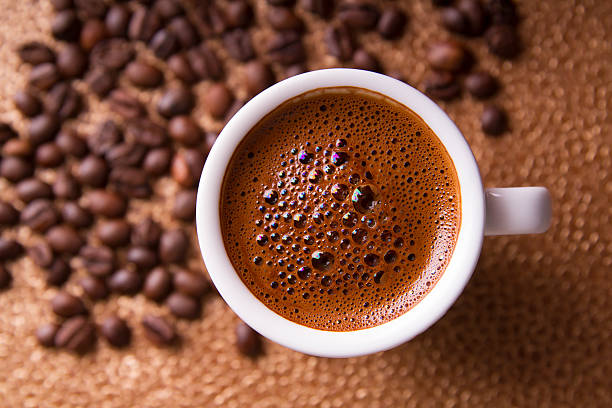

Coffee is a brewed drink prepared from roasted coffee beans, the seeds of berries
from certain flowering plants in the Coffea genus. From the coffee fruit, the seeds
are separated to produce a stable, raw product: unroasted green coffee.
The seeds are then roasted, a process which transforms them into a consumable
product: roasted coffee, which is ground into fine particles that are typically
steeped in hot water before being filtered out, producing a cup of coffee.
Coffee is darkly colored, bitter, slightly acidic and has a stimulating effect in humans,
primarily due to its caffeine content. It is one of the most popular drinks in the
world and can be prepared and presented in a variety of ways (e.g., espresso,
French press, caffè latte, or already-brewed canned coffee). It is usually served hot,
although chilled or iced coffee is common. Sugar, sugar substitutes,